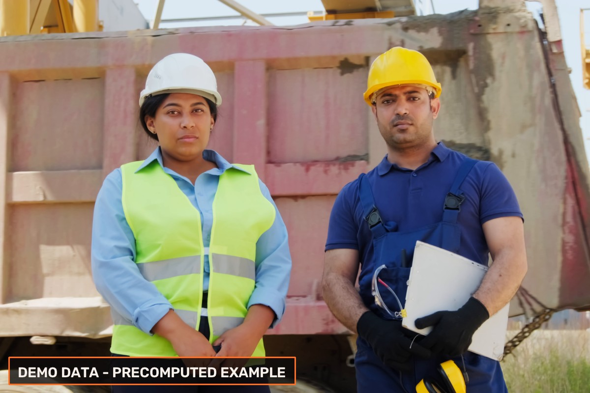

Original video frames selected for visual inspection
by Meta Muse Spark. Every assessment is tied to its
original video timestamp.
Frame 0
Timestamp: 0.000 seconds
All Helmets Visible

Frame summary
DEMO: Precomputed opening frame from sample footage.
Worker assessments
Person 1
Helmet Visible
Visual evidence
DEMO: Precomputed frame assessment for the guest demonstration.
Frame 50
Timestamp: 1.667 seconds
Uncertain
Frame summary
DEMO: Precomputed frame routed to human review.
Worker assessments
Person 1
Uncertain
Visual evidence
DEMO: Precomputed frame assessment for the guest demonstration.
Limitations
DEMO DATA — precomputed demonstration report, not a real inspection.
Important:
SOPProof provides prototype, visual evidence-based
assistance. This report is not a certified safety audit
or a legal determination. Only selected video frames
were reviewed by Muse Spark. Unreviewed intervals cannot
be assumed compliant. Potential concerns require
human verification.